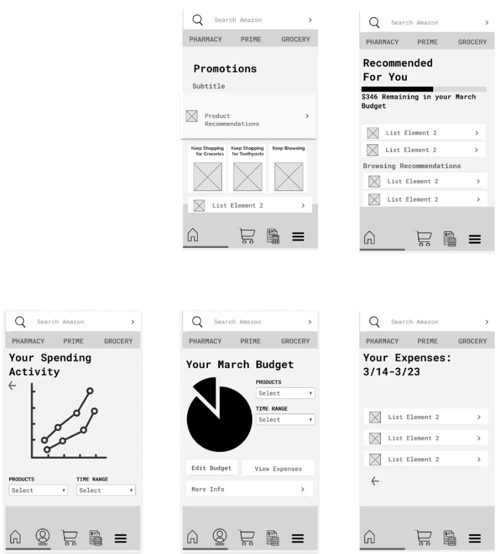
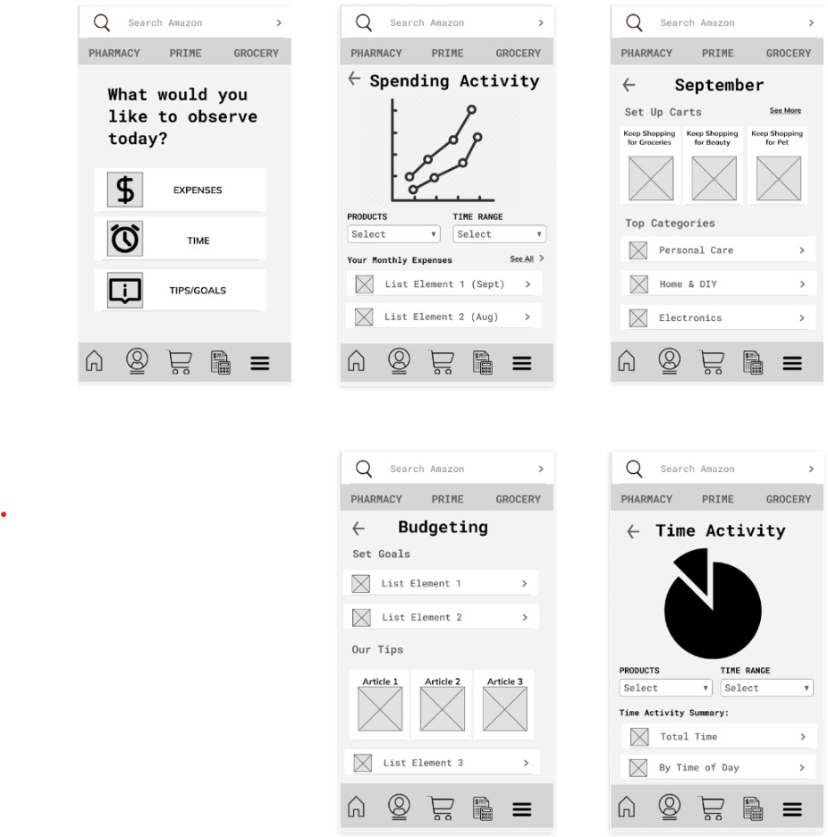
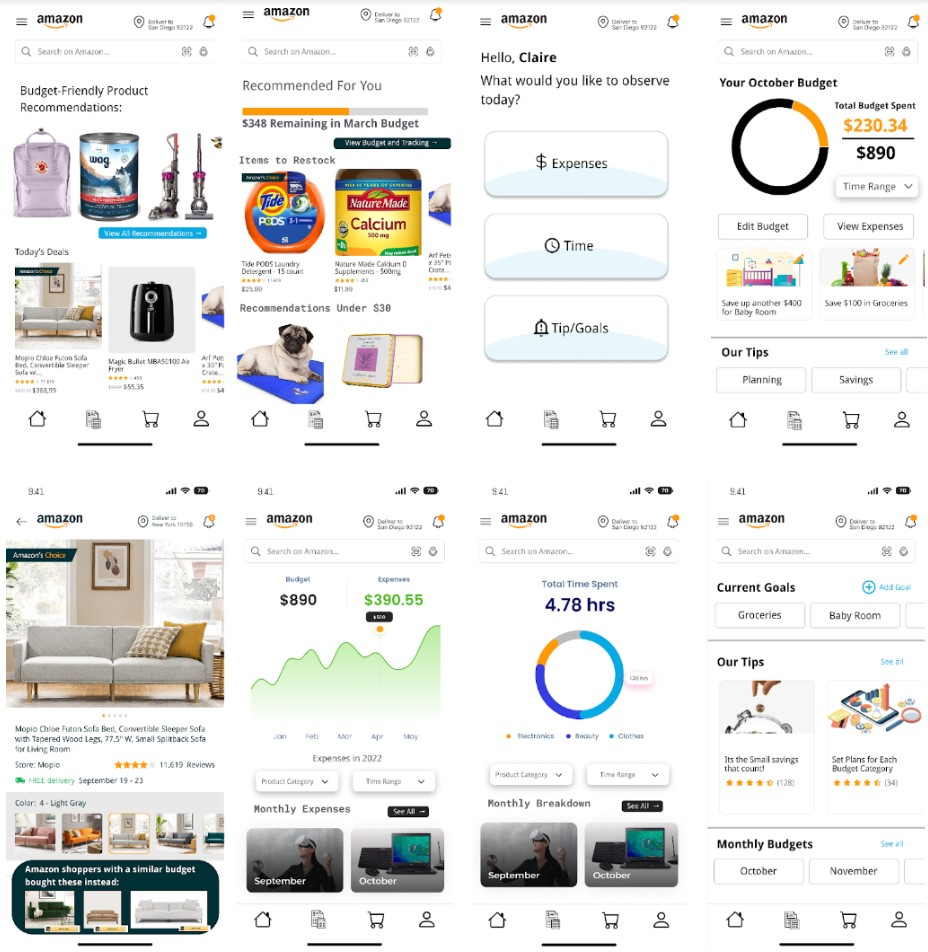

Design and Testing
Usability Testing
Following Flow 1

Following Flow 2

For our user testing interviews we focused on using the Figma prototyping feature so users can have a
more natural experience navigating through the different pages. We recorded each session on zoom and
would either have them walk through the prototype itself or tell us exactly where they wanted to click
on the screen. This second option was due to technical issues with some pages not appearing. The users
we tested were taken from the local San Diego area from individuals we already knew. We got a
representative sample of people similar to our personas, one for each. These being, a young new mother
of one (following our persona Sheila Hernandez), a tech savvy engineer (following our persona James
McDonald) and an older senior finance specialist (following our persona Lottie Boyd). These interviewees
gave us insight as to what features attracted them most and which were harder to find or understand.
Findings
Starting with our first prototype following our flow 1, users seemed to enjoy features that catered
automatically to their preferences. For example, the mother user really enjoyed product recommendations
based on the budget she has set for herself as she can maximize her money effectively. The older
specialist enjoyed the idea of automatic tracking of her expenses on the application itself as she
usually does it through a spreadsheet manually. As for set 2 following our flow 2, 2 out of 3 users
enjoyed the simplicity of navigating through the prototype itself. All users thought the initial
budgeting home screen with the 3 links to expenses, time, and tips/goals to be very intuitive. Another
plus of this set was the focus on goal setting. The tech savvy engineer likes the idea of having control
over the goals he set for himself but with the guidance the rest of the features would give you.
However there were negatives brought up through testing. Starting with set 1, all users had trouble
finding pages related to their time activity. For this set we did not have a dedicated time activity
page which made users want to select the hamburger menu to see additional options. Another issue we had
was users not associating the more info button with any particular idea which we intended to be a
behavior tracker that viewed your spending activity. As for set 2, users could not find any concrete way
of editing their budget. 2 out of 3 users believed that it would be located in the goal setting page but
initially had checked the expenses section. Overall in both sets the older specialist and the mother had
trouble initially associating the budgeting section with the form/calculator icon and instead thought of
clicking on the hamburger menu first.
Most users had complete or partial preference for set 2. This was due to the general ease of use as they
were able to access different pages quickly. They also mentioned that they understood and were more
confident completing set 2’s tasks since they could pick up on the purpose of pages.

In designing our High-Fidelity flows, we referred heavily to the findings discovered during user testing
with our low-fidelity wireframes - users prefer ease of navigation and seamless transitions between
tasks. Overall, our second prototype reflected these strengths, but in our final design, we also decided
to also attempt to emphasize app nativity so the transition to these new additions will not be as
jarring for existing Amazon shoppers. Thus, we not only included a distinct navigation page from the
second prototype, but also native links to our budgeting features through product recommendations on the
home screen. Our aim to integrate both these experiences reflects both user friendliness as well as ease
of implementation for Amazon.
In our decision to draw strengths from both prototypes, it meant we had to be careful with thinking
about how navigation to budgeting would be integrated into the current design of the app. When thinking
about our user testing results, particularly when emphasizing user point-of-view, we knew that
prioritizing specific tasks like being able to set a budget or view specific statistics. We realized
that when users go through these features, they will have a specific end goal in mind, rather than be in
a mindset for browsing/exploration, so we decided to integrate the budgeting icon into the task bar at
the bottom, as well as have buttons to navigate to the features embedded into the product recommendation
experience that typically lives on the Amazon home page as well - these were design choices that
emphasized nativity within the existing app. As mentioned above, we also added a distinct menu page for
users to quickly navigate to their desired section for budgeting and expenses without clicking through
multiple pages or reports. The clearer their options for navigation are, the quicker and more
effectively they can make them.
Ultimately, we stuck to our overall vision that we planned in our next steps section in the previous
milestone - primarily focusing on ease of navigation and customizability of a budget. We make it easy
for users to set goals by integrating navigation to it in various locations, and also ensure the user
remains cognizant of these goals throughout their shopping experience. We prioritized the second
prototype while also integrating the strengths of the first prototype, and also focused on the fact that
this flow should have specific tasks and objectives in mind in the overall design of the experience.
.jpg)